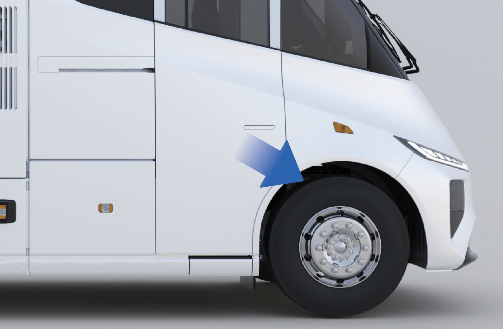
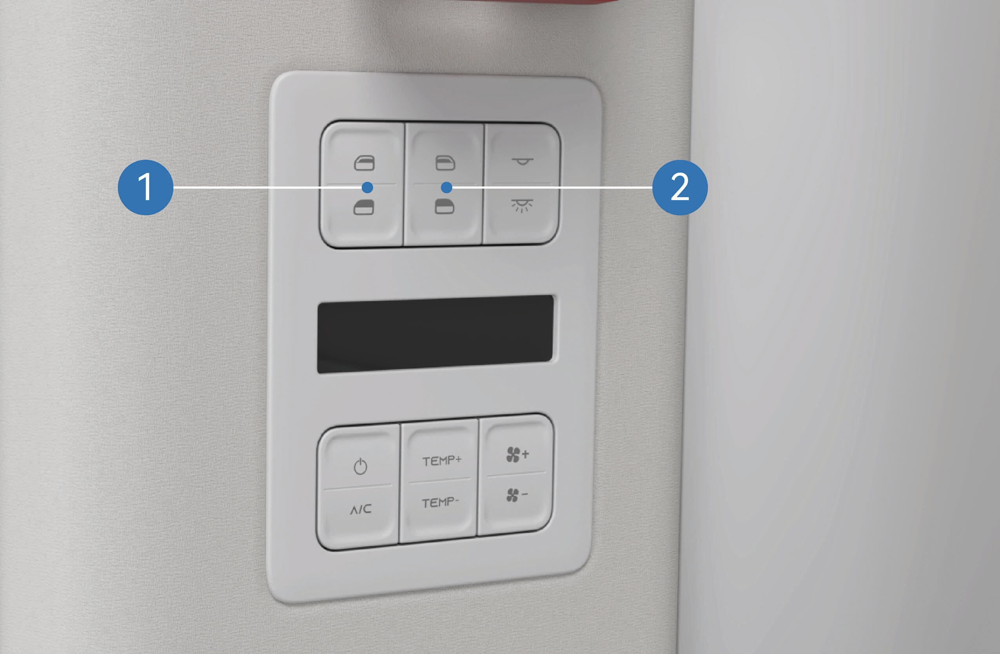
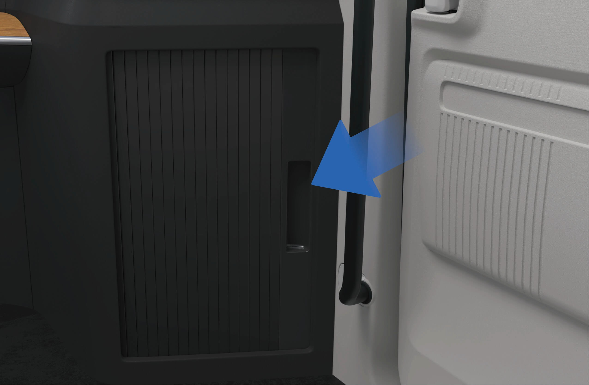
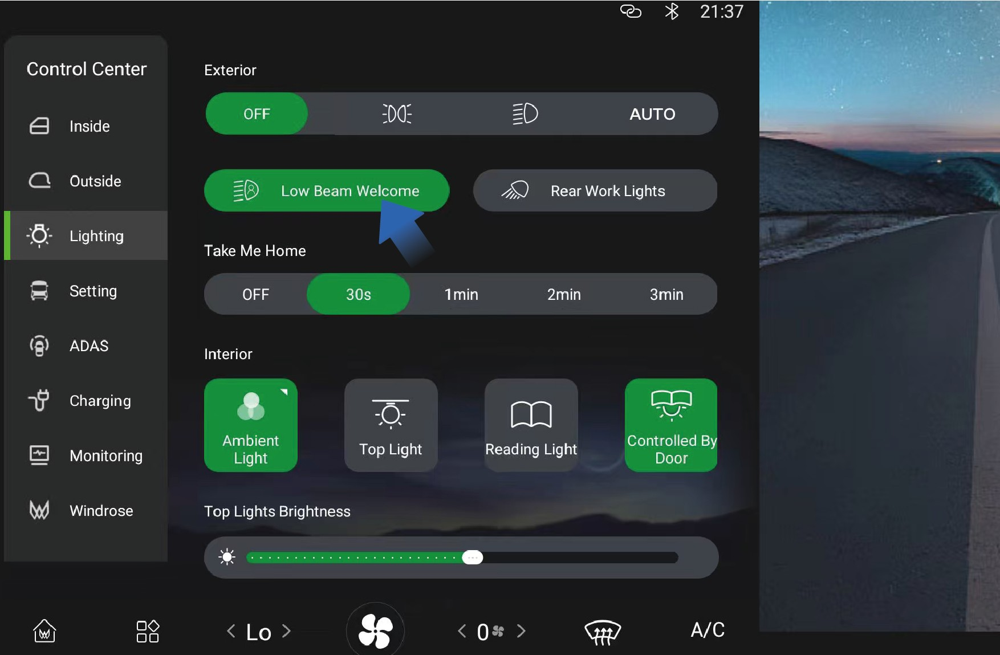
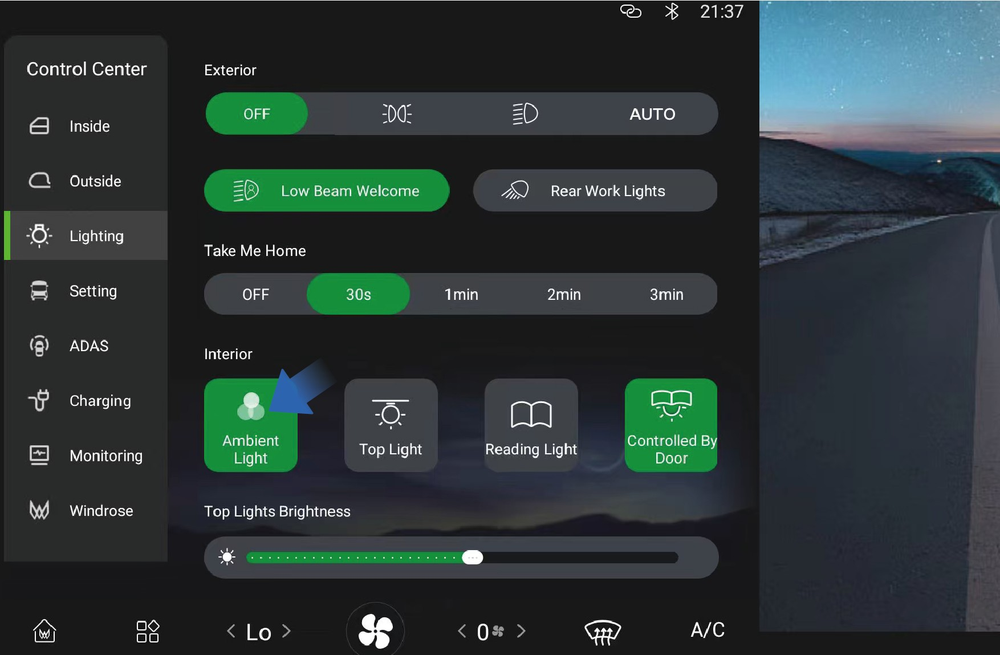

亲爱的客户：
感谢您选择 Windrose 车辆。
首次驾驶前，请仔细阅读本《车主手册》。本手册包含车辆功能、安全操作、保养要求及技术规格等重要资讯，熟悉相关内容有助于确保行车安全并使车辆保持最佳性能。
由于车辆配置及选配设备各异，交付给您的车辆可能与本手册中的说明或图示略有差异。Windrose 保留因持续改良产品而在不事先通知的情况下修改车辆设计、规格及配备的权利。
本手册中的资讯、图示及技术数据均以出版时为准，仅供参考，不构成合约承诺。
未经 Windrose 事先书面许可，本《车主手册》的任何部分不得以任何形式复制或传播。
注意：本手册封面图片及插图仅供参考。实际车辆外观及规格可能有所差异。
目录
1. 安全与法规
2. 整车概览
3. 内饰与舒适
4. 充电与出发准备
5. 仪表板
6. 驾驶控制
7. 驾驶辅助
8. 紧急处理程序
9. 维护保养
1.A使用者须知
↑ 顶部驾驶前须知
本车为纯电动牵引车。
日常操作与保养时，请遵守本《车主手册》（以下简称「本手册」）中所有警示及说明，以避免车辆损坏或人身伤害。
首次驾驶前，请仔细阅读本手册，熟悉车辆功能及操作要求。如在使用过程中遇到任何问题，请联系 Windrose 服务热线。
本手册版权归 Windrose 所有。未经 Windrose 事先书面许可，本手册任何部分不得复制、传送或散布。
Windrose 保留因持续改良产品而在不事先通知的情况下更新本手册内容的权利。如需取得最新车辆资讯，请参阅中控萤幕中的电子版《车主手册》或 Windrose 行动应用程式。
Windrose 官方网站：
Windrose 服务热线：您可在官方行动应用程式商店搜寻「Windrose」以下载应用程式。
备注缩写词首次出现时，以「全称（缩写）」格式标注，此后将直接使用缩写。
1.B警示说明
↑ 顶部驾驶前须知
本手册使用以下信号词及符号：
警告表示危险情况，若不予以避免，可能导致严重伤害或死亡。
1.B.1注意
↑ 顶部注意表示可能造成车辆或其零组件损坏的情况。
1.B.2备注
↑ 顶部备注提供额外的有用资讯或操作指引。
1.B.3环境保护
↑ 顶部环境保护表示与环境保护或节能效率相关的资讯。
1.B.4星号说明
↑ 顶部功能名称后加星号（*）表示该功能仅适用于特定车型或选配配置。
1.B.5
图示说明
↑ 顶部
此箭头表示图中物件的确切位置。
此箭头表示图中物件的移动方向。
此箭头表示图中物件的旋转方向。
此箭头表示图中物件的翻折方向。
1.C环境保护
↑ 顶部驾驶前须知
Windrose 致力于永续发展与环境保护。本车辆设计旨在提升能源效率、减少排放。您可透过负责任的驾驶方式及节能操作，为环境保护尽一份心力。
1.D行车安全
驾驶前须知
请随时遵守最大允许总质量及轴荷限制。切勿超载，超载可能导致车辆损坏、失控或人身伤害。
凡在碰撞事故中承受冲击力的安全带，即使外观无明显损坏，也应予以更换。
警告（续上页）
警告
切勿在空档滑行下坡。此举会解除驱动马达制动力，可能导致车辆失控。
驾驶前，请将座椅调至正确位置。坐姿不正确可能导致疲劳、座椅意外移位或车辆失控。请确保座椅位置允许正确使用安全带。
安全带是必要的安全装置。所有乘员在车辆行驶时均必须正确佩戴安全带。
驾驶时切勿将座椅靠背过度后倾。紧急煞车时，不正确的坐姿可能
降低安全带的保护效果。
在以下任何情况下，车速不得超过 30 km/h：
进出非机动车道、铁路平交道、急弯、窄路或桥梁。
回转、转弯或下陡坡。
因雾、雨、雪、尘或冰雹造成能见度低于 50 m。
在结冰、积雪或泥泞路面行驶。
拖吊故障车辆。
↑ 顶部
注意在无线电天文观测站附近行驶时，请保持安全距离。配备雷达的车辆可能对观测站设备造成电磁干扰。
1.E原厂零件
驾驶前须知
在以下情况下，Windrose 不提供零件保固：
未经授权的车辆改装，尤其是涉及行车安全相关系统（例如高压系统、电气系统、煞车系统、转向系统或 TBOX）的改装。
篡改车辆 OBD 系统。
使用未经认可的零件或液体而导致安全风险或车辆损坏。
保固期内无法提供文件证明使用了认可液体。
未依保养要求在 Windrose 授权服务中心进行保养。
1.F资料安全
↑ 顶部驾驶前须知
依据适用法律法规，Windrose 收集并处理车辆数据，包括位置资讯、驾驶行为数据、音视频记录及个人资讯。
Windrose 依据适用的资料保护法规及行业标准，采取适当的技术与组织措施保护上述数据。
1.G车辆改装
驾驶前须知
↑ 顶部1.G.1改装前所需文件
任何车辆改装均须符合适用的技术及法规要求。改装前，必须向 Windrose 提交相关技术文件。
文件至少应包含以下内容：
改装车辆的用途及使用条件。
改装后的车辆总质量及各轴轴荷。
改装车辆的整体外廓尺寸（含作业状态）。
车厢地板离地高度。
车厢安装方式。
副车架结构示意图。
1.H车辆报废
驾驶前须知
↑ 顶部不再符合行驶要求的车辆，必须依据适用环保法规进行处置。
车辆报废及高压电池回收必须由 Windrose 或其授权回收机构执行。
警告高压电池处置不当可能引发火灾或环境污染。切勿擅自拆解或丢弃高压电池。
1.H.1高压电池回收
Windrose 将依据彼时适用的法律法规及市场条件，对高压电池的容量及状态进行测试并回收。
高压电池回收：回收及后续处理应由 Windrose 或其指定的第三方回收机构执行。
高压电池运输：高压电池应由专业运输机构负责运送。请联系 Windrose 授权服务中心，通知专业回收机构进行处理。
警告
切勿随意丢弃废旧高压电池，以免引发意外火灾或严重的环境污染。
切勿将废旧高压电池转交给其他单位或个人。擅自拆解高压电池而造成的任何环境污染或安全事故，您须承担相应责任。
1.I节能驾驶
驾驶前须知
以下做法有助于最大化续航里程并提升能源效率：
保持稳定车速，避免急加速或急煞车。
定期保养，使车辆保持良好工作状态。
切勿在空档滑行，否则将导致电桥润滑不足，进而损坏零组件。
1.J冬季行车
↑ 顶部驾驶前须知
1.J.1冬季行车准备
依据当地最低温度选用优质冷却液，冷却液冰点应低于当地最低温度。
随时保持电池充足电量，以防电池在低温下结冻。
1.J.2冬季冷却液使用
↑ 顶部在寒冷季节或车辆停放于寒冷环境时，应确保冷却液的防冻性能。请使用 Windrose 推荐的冷却液。
1.J.3冬季行车注意事项
建议使用雪链或雪地轮胎。
避免高速时急加速、急煞车及急转弯。
在冰雪覆盖的路面上低速行驶，以确保良好的行车制动效果。
保持合理的车距（在雨雪天气或结冰路面行驶时应增加
安装雪链后，启动车辆并观察雪链是否松动或轮胎安装是否正确。
↑ 顶部警告使用雪链时，严禁超过最大有效行驶速度，以免发生事故。
车距，因为雨雪天气或结冰路面可能增加行车制动距离）。
1.K雪链使用
驾驶前须知
使用雪链时，请注意以下事项：
建议在厚雪或结冰路面行驶时使用雪链。
雪链规格必须与车辆所安装的轮胎尺寸及型号相符。
将雪链安装于驱动轴的外侧轮胎（两侧均需安装）。
安装或拆除雪链时，注意勿损坏轮胎。
注意
 在无雪无冰的长路段行驶时，请拆除雪链。
在无雪无冰的长路段行驶时，请拆除雪链。行驶过程中确保雪链不接触或干涉任何车辆零组件。
仅在车辆停放于平坦地面时安装或拆除雪链。
1.L热带及高温地区行车
驾驶前须知
驾驶前请检查车辆状况：
确认冷却液液位在正常范围内，并检查是否有渗漏。
切勿将易燃物品（例如打火机、喷雾产品、香水）长时间放置在仪表板上或阳光直射的位置。高温可能导致加压容器破裂并引发火灾危险。
行驶中请注意以下事项：
警示灯亮起时，请立即停止行驶并
联系 Windrose 授权服务中心。
注意胎压及胎温。如胎压或胎温异常，应立即停止行驶，让轮胎自然冷却。切勿以喷水或放气方式为轮胎降温降压，否则容易加速轮胎老化与磨损，严重时可能导致爆胎。
行驶中若发生爆胎，应立即按下危险警示灯开关，双手保持在方向盘9点及3点钟位置不转动，并间歇性踩踏煞车踏板，使车辆逐渐减速，同时警示其他道路使用者。
监控胎压及胎温。
如有异常，请在安全可行的情况下立即停车，让轮胎自然冷却。切勿以喷水或放气方式为轮胎降温，以免加速轮胎老化并增加爆胎风险。
留意仪表板上的指示灯及警示灯，如出现车辆相关故障指示灯或警示
在颠簸及湿滑路面行车
驾驶前须知
在颠簸及湿滑路面行驶时，请注意以下事项：
在颠簸路面上降低车速，以提升乘坐舒适性并减少悬吊及减震零组件的磨损。
在湿滑路面上降低车速，并轻踩煞车，以防失去牵引力及车辆侧滑。
如车辆在湿滑路面上开始侧滑，应使用行车煞车平稳减速，避免急打方向盘。
1.M坡道行车
↑ 顶部驾驶前须知
1.M.1上坡行车注意事项
在坡道起步时若车辆后溜，应立即踩下煞车踏板，拉起电子驻车煞车，然后重新启动起步程序。
爬坡时保持低速平稳行驶，逐渐踩踏油门，避免急加速或急煞车。
下坡行车注意事项
下坡前先降低车速，使车辆以可控速度进入下坡路段。
切勿在空档滑行下坡，此举会解除驱动马达制动力，可能导致车辆失控。
下坡前确认煞车系统工作正常。如怀疑有故障，请先排除问题再继续行驶。
下坡时避免急打方向盘，以降低翻车风险。
长坡下行时，避免持续煞车。请采用适当的速度控制及制动技术，防止煞车过热而导致煞车衰退。
1.N安全缺陷通报
↑ 顶部驾驶前须知
如怀疑车辆存在安全相关缺陷，请尽快将车辆停放于安全地点，并立即联系 Windrose 客户服务或 Windrose 授权服务站。
Windrose 将依据适用法律法规的要求，视情况发布安全通知、服务活动或召回。在欧盟境内，车辆安全召回依欧盟市场监管及型式认证框架处理，并与相关成员国之国家型式认证及市场监管主管机关协调办理。请遵守 Windrose 提供的所有安全指示及服务活动要求。
Windrose 服务热线：【待确认欧盟联络资讯】
Windrose 服务网站：【待确认欧盟服务网站】
授权服务网络：【待确认欧盟服务网络】
2.A车辆外观概览
车辆识别

前方向灯／日行灯
位置灯 3. 全景天窗
4. 侧置工具箱 5. 充电口

|
|
|
|
|
|
|---|---|---|---|---|---|
|
|
|
|
|
|
|
|
|
|
|
|
2.B车辆内部概览
车辆识别

|
|
2. |
|
3. |
|
|---|
4.
方向盘
车载娱乐萤幕
动能再生制动拨片（左）
7.
仪表板
仪表板储物盒／AR 抬头显示器*
动能再生制动拨片（右）
|
|
11. |
|
12. |
|
|---|---|---|---|---|---|
|
|
14. |
|
15. |
|
2.C车辆铭牌与车辆识别码
车辆识别
车辆铭牌

车辆铭牌位于车辆右侧滑门门框（C 柱）上。
铭牌显示以下资讯：
制造厂名称
整车型式认证（WVTA）编号
车辆识别码（VIN）
预定登记最大允许质量
技术允许最大满载质量
适用法规所要求的其他法规资讯
车辆识别码

车辆识别码（VIN）钢印位于车架右侧纵梁上，靠近前轴中心线处。
2.D马达铭牌及编码位置
车辆识别

马达铭牌位置
马达序号位置
注意
马达序号的拓印（压印）件连同马达文件于车辆出厂时一并提供。请妥善保管此文件以备日后查阅。
由于不同制造商供应的牵引马达可能有所差异，马达铭牌及相关文件所显示的资讯可能有所不同。请以实际产品为准。
风挡玻璃的微波／射频透过性 车辆识别
本车风挡玻璃不含会干扰射频（RF）讯号传输的金属镀膜。
因此，电子收费（ETC）装置、收费标签、车联网设备或其他以射频为基础的装置，可依照设备制造商提供的安装说明安装于风挡玻璃上。
3.A电动滑门
↑ 顶部进出车辆
车辆右侧设有电动滑门，可透过多种操作方式开关门。
3.A.1操作说明
车外操作

↑ 顶部电动模式：车辆解锁后，按下隐藏式门把开关，电动滑门将自动开启或关闭。
手动模式：车辆解锁后：
1. 按下隐藏式门把前端以解除锁定。
2. 向外拉动门把以解锁滑门。
3. 手动推开滑门。

3.A.2上车

电动滑门开启后，请依照以下步骤进入驾驶舱：
面向车门，双手分别握住左右扶手。
将一只脚踩上下层踏板，向上拉起身体。
将另一只脚踩上上层踏板。
将下方那只手移至扶手较高的位置。
跨入驾驶舱。
上下车时滑倒或跌落可能造成人身伤害。
鞋底潮湿或沾污会大幅增加滑倒风险。进出驾驶舱时请格外小心。
进出驾驶舱时，务必与车辆保持三点接触（双手一脚，或双脚一手）。
切勿从车上跳下。
车内操作
车辆解锁后：

在车辆资讯萤幕上选择「控制中心」。
切换至「车内」介面。
按下「滑门」控制按钮以开启或关闭电动滑门。
电动模式：车辆解锁后，按下滑门前方 B 柱饰板上的开关，即可开启或关闭车门。
手动模式：若滑门处于关闭状态，向后拉动内侧把手以解锁车门，再手动推开。
若滑门处于开启状态，握住内侧把手并向前推动滑门以关闭。
车内紧急情况


若电动开关或内侧把手失效：
拆下滑门保护面板的下盖板。
拉动紧急解锁拉绳，手动解锁滑门。
中控锁开关

滑门关闭后：
按下仪表板右侧按钮组中的中控锁开关，可锁定滑门。
门锁上锁后，状态指示灯将亮起。
再次按下开关即可解锁。
滑门手动模式

手动模式可透过车辆资讯萤幕启用或停用：
选择「控制中心」。
切换至「监控」介面。
选择「滑门手动模式」。
↑ 顶部手动模式启用后，滑门只能手动操作。
滑门防夹功能
自动关闭过程中，若滑门侦测到障碍物，车门将停止关闭并自动反向开启。
3.A.3注意事项
↑ 顶部警告防夹功能仅在电动关闭操作时有效，手动操作车门时无效。
3.B安全带
↑ 顶部进出车辆
驾驶座及前排乘客座均配备安全带，可在紧急煞车或碰撞时防止或减轻乘员伤害。
3.B.1操作说明
↑ 顶部驾驶座安全带位于驾驶座左侧，可直接拉出扣紧。
前排乘客安全带位于前排乘客座右侧。乘客就座后，提醒乘客在车辆起步前正确系上安全带。
正确使用安全带
佩戴安全带时，请遵守以下规定：
• 腰带部分应横跨骨盆（臀部），而非腹部。
• 安全带应紧贴身体，不可扭曲。
• 肩带部分应跨过肩膀中部。
• 切勿将安全带置于颈部或腋下。
• 扣紧安全带后，向上拉紧肩带，确保腰带紧贴臀部。
• 驾驶前务必确认安全带已正确扣紧。
安全带提醒
若驾驶未系安全带，仪表板上的安全带警示灯将亮起。
驾驶系上安全带后，警示灯将熄灭。
清洁安全带
安全带脏污时，请使用温和的肥皂水清洁。
1. 将安全带完全拉出并固定。
2. 在污染部位涂抹温和的肥皂溶液。
3. 用软刷或布轻轻清洁安全带。
4. 如有必要，以清水冲洗。
5. 安全带完全晾干后，再收回卷收器。
切勿将湿的安全带收回卷收器。

3.B.2注意事项
警告车辆行驶时，所有乘员均必须正确佩戴安全带。正确使用安全带可大幅降低紧急煞车或碰撞时受伤的风险。
未佩戴安全带或使用不当可能导致严重伤害或死亡。
请勿在未设置座椅及安全带的区域就坐。
请勿使用损坏或故障的安全带。
每条安全带仅供一名乘员使用，切勿与他人共用。
切勿将肩带置于颈部或腋下。
请勿拆除、改装或干扰安全带系统。
请勿使用漂白剂、染料或化学溶剂清洁安全带，以免削弱带体材质。
3.C电动车窗
↑ 顶部进出车辆
侧窗可使用仪表板左侧或卧铺控制面板上的车窗控制开关进行操作。
车辆配备自动关窗功能。车辆断电并上锁时，若车窗尚未完全关闭，将自动关闭。
3.C.1
操作说明
透过组合按钮调整车窗

左侧车窗控制开关：按住上下开关按钮可控制左侧车窗的开合幅度；快速按下并放开左侧车窗控制开关的上下按钮，可一键完全升起或降下左侧车窗。
右侧车窗控制开关：按住上下开关按钮可控制右侧车窗的开合幅度；快速按下并放开右侧车窗控制开关的上下
按钮，可一键完全升起或降下右侧车窗。
透过卧铺开关调整车窗

左侧车窗控制开关：按住上下
↑ 顶部按钮，可自动完全关闭或开启车窗（一键升降）。
3.C.2注意事项
警告
关闭车窗前，务必确认所有乘客的身体各部位均未伸出车外，否则可能造成严重伤害。
请勿在高速行驶时操作车窗。
备注请及时清除车窗表面的积雪及冰霜，以避免车窗在移动时卡顿或无法正常开关。
按住上下开关按钮可控制左侧车窗的开合幅度；
分别快速按下并放开两个按钮，可自动完全关闭或开启车窗（一键升降）。
右侧车窗控制开关：按住上下开关按钮可控制右侧车窗的开合幅度；分别快速按下并放开两个按钮，可
3.D卧铺隐私帘*
↑ 顶部进出车辆
卧铺区设有隐私帘轨道，可安装隐私帘。隐私帘有助于提供隐私保护并遮挡卧铺区的阳光。
* 此功能仅适用于特定车型。
3.D.1操作说明
卧铺隐私帘轨道
帘道安装于卧铺区上方的车顶。隐私帘可依需要挂接于轨道上。
卧铺隐私帘*

↑ 顶部安装后，可将隐私帘拉拢遮蔽卧铺区，在休息时提供隐私保护并遮挡阳光。
3.D.2注意事项
↑ 顶部注意请勿用力拉扯隐私帘，以免帘子脱落。
3.E全景天窗

↑ 顶部进出车辆
车辆配备全景车顶及电动遮阳板。全景车顶为固定式，不可开启，可让自然光进入驾驶舱并提供外部视野。遮阳板可按需开闭以遮挡阳光。
3.E.1操作说明

全景车顶遮阳板可透过车辆资讯萤幕操作。
在车辆资讯萤幕的「车内」介面中选择「天幕遮阳板」。
按住开/关按钮可开启或关闭遮阳板，放开按钮即停止移动。
短按并放开开/关按钮，可启动自动操作，使遮阳板完全开启或完全关闭。
注意事项
注意
请勿手动拉扯天窗遮阳板，以免造成损坏。
请勿用尖锐物品刮划天窗玻璃、天窗遮阳板或玻璃周围的黏合条。
3.F风挡电动遮阳板
↑ 顶部进出车辆

朝向强烈阳光行驶时，可使用风挡电动遮阳板以减少眩光，提升行车舒适性。
3.F.1操作说明
风挡电动遮阳板可使用仪表板左侧的控制开关进行操作。

下降遮阳板开关
按住此开关可降下风挡遮阳板，放开开关即停止移动。
上升遮阳板开关
按住此开关可升起风挡遮阳板，放开开关即停止移动。
注意事项
↑ 顶部注意请勿手动拉扯风挡电动遮阳板，以免造成损坏。
备注使用遮阳板时，请确保其不会妨碍正常视野。
3.G车内卧铺
↑ 顶部进出车辆
车内设有供驾驶及乘客休息的卧铺。
3.G.1操作说明
卧铺右上方坐垫可手动向左翻折，以腾出前排乘客座空间。若车辆右侧安装了高度可调卧铺，右侧卧铺的上方坐垫可手动抬起并固定，作为多段调节的卧铺头枕使用。如需放下卧铺，将右侧卧铺上方坐垫抬至最高位置后松手即可。
卧铺防护网


车辆设有卧铺防护网。使用卧铺前，请如图所示展开防护网，然后将防护网左侧、右侧及后方的8个插舌分别插入防护网左端、右端及后端的8个扣具中，将防护网固定到位。
注意
折叠前排乘客座或抬起卧铺上方坐垫时，请注意勿夹伤手指。
使用卧铺前请正确安装防护网；若未使用防护网，乘客可能从卧铺跌落，增加事故中伤亡的概率。
3.H后视镜
↑ 顶部进出车辆
车辆安装有实体后视镜，为驾驶提供良好的行车视野。
您可在仪表板的车辆资讯萤幕上选择「控制中心」，切换至「车外」介面，以调整实体后视镜。

左右调整
点选以分别调整左侧或右侧实体后视镜。
后视镜加热
点选此选项，实体后视镜将启动加热功能以除霜除雾。再次点选可关闭，或在车辆断电后自动关闭。
警告
驾驶前务必正确调整后视镜，行驶中严禁调整后视镜，否则可能导致人身伤亡及财产损失。
请勿遮盖感测器。附著于摄影机上的污垢、冰雪可能降低其功能与性能。请随时保持摄影机及周围环境的清洁，以避免交通事故。
3.I杯架
↑ 顶部进出车辆
杯架分别设置于仪表板左右两侧及前排乘客座扶手上，可放置水杯或饮料容器。

左侧杯架


右侧杯架 • 前排乘客座右侧杯架
3.I.1注意事项
警告请勿将未密封盖好的热饮放入杯架，否则车辆颠簸时可能溢出，造成人身伤害或损坏车辆零组件。
备注
杯架中只能放置可密封且尺寸合适的饮料容器，以防溢出。
请勿强行将不合适的容器塞入杯架，否则可能损坏容器或车辆。
3.J烟灰缸
↑ 顶部进出车辆
车内设有烟灰缸，方便存放烟蒂及烟灰。
3.J.1
操作说明

↑ 顶部烟灰缸安装于仪表板右侧杯架中，您也可依个人需求将烟灰缸放置于其他位置。
3.J.2注意事项
警告
驾驶时请勿抽烟，以免造成事故或违反相关法规。
将烟蒂投入烟灰缸前，请确认烟蒂已完全熄灭，以免引发火灾。
安装烟灰缸时，请确保安装牢固，防止烟灰缸在车内晃动或从固定装置脱落。
↑ 顶部备注使用完烟灰缸后，务必盖上盖子，以防烟蒂或烟灰散落。
3.K侧置工具箱
↑ 顶部进出车辆

车辆的驾驶工具存放于车辆左侧的工具箱中，以备紧急使用。
3.K.1操作说明

↑ 顶部您可在仪表板的车辆资讯萤幕上选择「控制中心」，切换至「车外」介面，并点击「工具箱解锁」按钮来解锁工具箱。工具箱须从车外手动关闭。
工具箱内设有灯具，开启工具箱时自动亮起，关闭工具箱时自动熄灭。
3.K.2
注意事项
↑ 顶部警告行驶中请保持工具箱关闭，以免发生意外。
3.L车内储物装置
↑ 顶部进出车辆
车内设有多个储物装置，可存放各种尺寸的物品。
3.L.1操作说明

仪表板右下方设有储物盒，可存放物品。

前排乘客座右侧储物盒
前排乘客座下方储物盒
卧铺下方储物盒
↑ 顶部卧铺及前排乘客座下方各设有储物盒，可拉出使用。前排乘客座右侧设有储物盒，可存放较小的物品。

卧铺上方设有储物盒，开启时灯具自动亮起，关闭时自动熄灭。卧铺上方大储物盒的最大承重为 25 kg，小储物盒的最大承重为 15 kg。
未配备 AR 抬头显示器的车辆，AR 抬头显示器位置设有储物盒，可放置较小的物品。请放置小型轻量物品，避免放置尖锐物品，以免损坏储物盒内侧饰皮。

3.L.2注意事项
↑ 顶部备注驾驶前请确保所有储物盒均已关闭，以免行驶中物品从高处坠落，造成物品损坏或人身伤害。
3.M网袋
↑ 顶部进出车辆
车辆左下方设有网袋，可存放较小的物品。
3.M.1操作说明

网袋
3.M.2
注意事项
备注请勿在网袋中放置尖锐物品，以免损坏网袋或伤害驾驶。
3.N报刊架
↑ 顶部进出车辆
驾驶座背后设有报刊袋，可存放报纸、地图等小型物品。
卧铺旁设有报刊架，可存放报纸、杂志及其他物品。


卧铺上方报刊袋 • 卧铺右侧报刊袋
3.N.1注意事项
↑ 顶部备注固定在卧铺上的报刊架仅适合存放报纸及杂志等物品，若放入小型物品，可能无法从袋中取出。
3.O衣帽钩
↑ 顶部进出车辆
卧铺上方设有衣帽钩，用于悬挂衣物。
3.O.1操作说明

衣帽钩
3.O.2
注意事项
备注衣帽钩仅适合悬挂轻便衣物或帽子等物品，请勿悬挂重物。
3.P挂物装置
↑ 顶部进出车辆
卧铺侧面设有挂物装置，可用于悬挂毛巾或小件衣物。
3.P.1操作说明

挂物装置
3.P.2
注意事项
备注挂物装置仅用于悬挂干毛巾或小件衣物，请勿悬挂重物，以免损坏挂物装置并引发意外。
3.QUSB 充电
↑ 顶部进出车辆
车辆设有 USB 接口，分别位于仪表板左侧及前排乘客座扶手上。USB 接口可为手机充电，充电功率为 15W，支援 Type-C 及 Type-A 接口。
3.Q.1操作说明

仪表板左侧 USB 接口

前排乘客座扶手 USB 接口
3.Q.2注意事项
↑ 顶部警告切勿将液体溅入接口。
注意充电时连接的装置可能发热，请确保发热装置不会危及人身安全或造成财产损坏。
3.R手机无线充电
↑ 顶部右侧仪表板设有无线充电装置，可为手机无线充电，充电功率为 15W。
3.R.2
注意事项
↑ 顶部警告请勿将含有金属零件的物品与手机一同放入无线充电感应区，否则含金属零件的物品可能过热或损坏，引发安全事故。
充电时，请将手机正面朝上放置于
无线充电感应区内。
3.R.1操作说明

手机无线充电区
注意
- 启用手机无线充电功能前，请确保 NFC 卡、信用卡或其他磁性物品远离充电区域。
请勿将手机无人看管放置于车内充电，以避免安全风险。
请勿将液体溅入无线充电区，以免损坏电子零组件。
请勿在充电区域放置重物，以免损坏手机的无线充电模组。
备注
充电时手机温度略有上升属正常现象。
手机过热时，车辆可能暂停充电以保护手机电池，待手机冷却后恢复充电。
无线充电功能仅支援符合无线充电协议的手机、耳机、音响等装置。
使用无线充电功能时，请将装置放置于充电区域中央，以防装置充电失败或充电效率低下。
每次只能为 1 部手机充电。
若手机壳材质特殊（例如含金属支架／金属磁铁的手机壳）或过厚，可能导致充电失败。
车辆在颠簸路面行驶时，手机无线充电可能出现间歇性中断。
若手机无法正常充电，请确认手机已正确放置于无线充电区内且无异物干扰，或等待无线充电
↑ 顶部感应区冷却后再试。若仍无法充电，
请及时联系 Windrose 授权服务中心。
3.S电源插座
↑ 顶部进出车辆
卧铺左下角配备 2 个直流电源，规格如下：
额定电压：24V
最大电流：15A 额定电压：12V
最大电流：10A
卧铺左下角另配备一个 230V 逆变器及插座，规格如下：
额定功率：1000W
额定电压：AC 230V
输出频率：50Hz ± 0.5Hz
3.S.1操作说明

直流电源
交流电源

24V 拖车电源插座：最大安全工作功率：2 kW
3.S.2注意事项
↑ 顶部注意230V 逆变器仅在车辆连接高压电源时方可使用。车辆断电后，仅 12V 或 24V 电源可供使用。

您可在仪表板的车辆资讯萤幕上选择「控制中心」，切换至「灯光」介面，并点击「随门控制」按钮，以启用或停用随开关门亮灭功能。启用此功能后，开门时顶灯亮起，关门时熄灭。
3.S.3注意事项
↑ 顶部警告夜间行驶时，请勿开启前排室内灯。车内强光会降低夜间行车视野，可能引发碰撞事故。
操作说明
3.U迎宾灯
↑ 顶部车辆具备迎宾灯功能。
室内灯光

您可在仪表板的车辆资讯萤幕上选择「控制中心」，切换至「灯光」介面，并点击「近光灯迎宾」按钮，以启用或停用近光灯迎宾功能。离车随行照明
3.V阅读灯
↑ 顶部
室内灯光
驾驶舱及卧铺区均配备阅读灯，需要阅读照明时可开启。
3.V.1操作说明
↑ 顶部驾驶舱阅读灯
您可在仪表板的车辆资讯萤幕上选择「控制中心」，切换至「灯光」介面，以启用或停用离车随行照明功能。
3.V.2注意事项
备注您可依需求设定离车随行照明的持续时间。
驾驶舱阅读灯
您可在车辆资讯萤幕上选择「控制中心」，切换至「灯光」介面，并点击「阅读灯」按钮，以启用或停用阅读灯。
卧铺阅读灯


↑ 顶部卧铺上方设有阅读灯，按压前端可拉出并开启开关。灯具拉出后自动亮起，可依需求调整灯光角度。将阅读灯推回原位后自动熄灭。
3.V.3注意事项
↑ 顶部备注环境光线昏暗时，行驶中请勿开启阅读灯
3.W氛围灯
↑ 顶部
室内灯光
否则风挡玻璃可能产生反光，
造成前方道路视野不清，进而引发安全事故。
车辆配备氛围灯，可在多种颜色之间切换，并实现音乐律动效果。
3.W.1操作说明

↑ 顶部您可在仪表板的车辆资讯萤幕上选择「控制中心」，切换至「灯光」介面，并点击「氛围灯」按钮，以调整氛围灯。
您可依个人需求与喜好自行调整氛围灯。

3.W.2注意事项
↑ 顶部备注使用氛围灯时，请确保灯光颜色不会干扰驾驶视线，确保行车安全。
3.X空调控制系统
↑ 顶部车辆空调
您可透过车辆资讯萤幕中的空调介面，或车内卧铺右上方的空调控制面板，对空调进行设定与控制。
前排空调系统介面
在车辆资讯萤幕的空调介面中，可透过切换前排及后排空调介面，分别设定前后排空调的风量、温度或出风方向。

进入空调介面 6. 全车空调温度同步开关
11. 脚部及除霜模式
风挡除霜／除雾开关
前排空调温度 7. 脸部及脚部模式 12. 脚部模式 17. 香氛介面*
前排空调关闭开关 8. 脸部吹风模式 13. 前排空调风量
压缩机开关 9. 前排空调介面 14. ECO 节能模式开关
自动模式开关 10. 后排空调介面 15. 内外循环
开关
后排空调系统介面
|
|
|
|
|---|---|---|---|
|
|
|
|

3.X.1操作说明
|
|
|
|---|---|---|
|
|
|
|
|
|
|
|
|
|
|
|
|
|
|
|
|


|
|
|
|---|---|---|
|
|
|
|
|
|
|
|
|
|
|
|
|
|


|
|
|
|---|---|---|
|
|
|
|
|


空调控制面板
空调控制面板仅控制后排空调的对应功能。

后排压缩机开关按钮
后排空调开关
后排空调温度升高
后排空调风量加大
后排空调风量减小
后排空调温度降低
3.X.2
注意事项
警告
驾驶前，请确保所有车窗均无冰霜或雾气，否则视野受阻可能引发交通事故。
请勿长时间开启内循环功能，否则车内空气可能不新鲜，并导致车窗起雾。
备注
关闭压缩机开关并不会关闭整个空调系统，暖风系统可能仍在运作。
在非常潮湿的环境中首次开启空调系统时，风挡玻璃略微起雾属正常现象。
如空调系统运作声音较大，可手动调低空调风量。
空调系统运作或关闭时，可能听到类似流水声或嗖嗖声，
此声音系冷媒在空调系统正常运作时发出的声响，属正常现象。
若感觉车内空气混浊闷热，可开启外循环功能，将车外空气引入车内，保持车内空气清新。
3.Y空调出风口调整
↑ 顶部车辆空调
前排空调出风口位于风挡玻璃、仪表板及仪表板下方腿部空间。后排空调出风口位于车内卧铺左侧。
3.Y.1
操作说明
前排空调出风口调整

↑ 顶部可手动调整前排出风口的拨片，控制前排出风口的上下或左右吹风角度。
后排空调出风口调整
可手动调整后排出风口的拨片。上下拨动拨片可调整后排出风口的上下吹风角度；左右拨动拨片可调整后排空调出风口的左右吹风角度或关闭出风口。调整后排空调出风口时，至少保持一个出风口开启。

3.Y.2注意事项
↑ 顶部注意调整出风口拨片时，请勿用力过猛，以免损坏拨片。
3.Z车内香氛
↑ 顶部车辆空调
车辆配备车内香氛装置，可依个人喜好安装于驾驶座右侧下饰板区域的香氛盒中。
3.Z.1操作说明
打开香氛瓶盖，将香氛瓶细端插入座椅右侧下饰板区域上方香氛机构的孔中，轻轻向下按压，将香氛瓶安装到位。
香氛瓶插入孔中后，将被香氛
机构内的磁铁吸附固定。


香氛瓶安装到位后，车辆资讯萤幕将提示当前插入香氛的资讯。
更换香氛瓶时，用手指捏住香氛瓶底部，慢慢从香氛机构中取出。
香氛成功安装后，可在车辆资讯萤幕进入空调设定介面，点击「香氛」以开关香氛系统，在此介面中调整对应香氛的浓度并选择不同香型。
3.Z.2
注意事项
警告
请将香氛瓶放置于儿童无法取得之处，以避免意外误食瓶内物质造成中毒。
请勿将手指伸入香氛机构的腔体，以免造成人身伤害。
行驶中请勿安装或更换香氛瓶，以免发生事故。
使用香氛时若感到不适，请立即停止
使用香氛系统。
车内如有患有过敏症或呼吸道疾病的人员，请谨慎使用香氛系统。
注意
安装前请注意香氛瓶的有效期限。未拆封香氛有效期为 1 年，拆封后有效期为 3 个月。请在有效期限内使用香氛，并在到期后更换。
更换香氛瓶时，请保持双手清洁并确保香氛系统运作正常。
香氛机构下方安装有磁铁。请勿将手机、平板电脑等电子装置靠近中控开放储物区上方的香氛孔，以免影响电子装置及香氛模组的功能。
由于香氛可能与有机物发生化学反应，香氛瓶中的陶瓷香芯严禁直接接触塑料零件。
备注
 香氛体验因车内温度、空调风量及个人生理状态而有所差异。
香氛体验因车内温度、空调风量及个人生理状态而有所差异。香氛瓶中的陶瓷香芯应透过官方管道购买，以免损坏香氛瓶并确保香氛品质。
安装香氛瓶后，如香氛系统未能成功识别，请重新安装香氛瓶。
4.A充电口

车辆充电
 充电口
充电口
车辆两侧均设有充电口。
4.A.1操作说明
↑ 顶部车内操作
您可在仪表板的车辆资讯萤幕上选择「控制中心」，切换至「车外」介面，并点击「充电口解锁」按钮以解锁充电口盖，此时按压充电口盖即可开启。
4.A.2注意事项
备注
充电口盖只能透过车内的车辆资讯萤幕解锁，无法透过萤幕关闭。关闭充电口盖仍需在车外手动操作。
4.B充电准备
↑ 顶部车辆充电
为本车充电时，请使用电压 ≥ 1000V 的充电设备。电压低于此标准的充电设备将无法为本车充电。
4.B.1操作说明
充电前准备
检查充电桩电缆及车辆充电插座是否有损坏、浸水、烧灼等明显异常，确认充电桩及周围环境无明显安全隐患后方可充电。
将车辆停放在充电设备附近，确认车辆无绝缘故障等异常。车辆在高压及非高压状态下均可充电。
充电准备

将充电插头连接器插入充电口。插入到位后可听到「喀哒」声，表示连接成功。此时充电口电子锁启动，仪表板显示充电连接提示图示。
依照充电萤幕上的指示，刷卡或扫码启动充电程序。
在充电桩显示屏上选择对应的
充电模式及充电参数，确认资讯无误后，点击「开始充电」按钮以启动充电。充电桩显示屏将即时显示充电进度、充电时间、充电功率等资讯。
充电过程中，可主动点击「停止充电」按钮停止充电。充电完成后，设备显示屏将显示充电完成，应点击「停止充电」按钮以停止充电设备并解锁充电口电子锁。拔出充电插头，放回充电设备的插头底座。
充电指示灯
充电时，风挡玻璃顶部的指示灯将切换为充电指示灯。当高压电池 SOC 低于 30% 时，左侧充电指示灯闪烁；当高压电池 SOC 为 30%–90% 时，左侧充电指示灯常亮；当高压
电池 SOC 超过 90% 时，左侧及中间充电指示灯常亮，右侧充电指示灯闪烁；当高压电池 SOC 达到 100% 时，左侧、中间
及右侧充电指示灯均常亮。
紧急解锁


↑ 顶部
充电完成后若无法拔出充电枪，可使用充电插座旁的紧急解锁机构进行解锁。用工具将解锁机构向车辆内侧推动，使其从与车辆前进方向平行的位置转至垂直位置。充电插座紧急解锁机构的位置如图所示。

4.B.2
注意事项
警告
充电前，务必确认充电输出电压平台及低压辅助电源与车辆相符，且充电连接器符合法规要求。
严禁在充电桩周围堆放易燃易爆物品，且充电设备周围环境应保持通风良好。
充电过程中，严禁触碰充电插头连接器及车辆充电口，以免触电。
如发现设备异常，例如冒烟、散发异味、发出异常声音等，应立即停止充电并联系专业人员进行维修。
插拔充电插头前，先解锁车辆，插拔时不得歪斜、摇晃或用力过猛。
充电开始时，充电口电子锁将启动并锁定，严禁强行拔出充电插头；充电结束后，在车辆资讯萤幕上解锁车辆并结束充电，以释放充电口电子锁。
正常充电时请勿操作电子锁解锁栓。
注意应尽量避免高压电池过放，以确保高压电池的安全使用寿命。当高压电池 SOC 低于 20% 时，仪表板将显示高压电池 SOC 过低的警示提示；当高压电池 SOC 低于 5% 时，车辆将进入限功率模式，车速将随高压电池放电深度（DoD）的增加而降低。此时请尽快寻找附近的充电设备为车辆充电。
高压电池应在 10 °C 至 30 °C 的温度下使用。环境温度过高或过低均会缩短高压电池的使用寿命。
若车辆长期停用，应关闭主电源开关，并每半个月为高压电池充一次电。
当车辆处于欠压保护状态时，应及时充电后再使用，否则可能发生高压电池过放，影响电池性能及使用寿命。
备注
如充电口电子锁未启动，车辆将无法充电。可透过轻转充电插头进行确认。
4.C行车准备
驾驶前准备
使用车辆前，请进行以下检查以确保行车安全：
检查各部位的连接及紧固情况。
检查马达及电桥在运作时是否发出异常声音。
检查各配件的安装情况。
检查电桥及转向油箱的油位。
检查风挡洗涤液及冷却液壶的液位。
检查各润滑点的用油状况。
检查煞车系统及转向系统是否正常运作。
检查电气设备及管路的连接是否良好。
检查胎压。
确认驾驶工具及车载技术文件齐备。
4.D驾驶座
↑ 顶部驾驶前准备
您可依个人需求与喜好调整驾驶座的各项功能，以获得更舒适的驾驶体验。
4.D.1操作说明

驾驶座坐垫前后调整杆
提起并按住调整杆，自行前后滑动坐垫至合适位置后，放开解锁杆以锁定坐垫。
驾驶座扶手旋钮
旋转扶手旋钮以调整扶手高度。向左旋转旋钮时，扶手下降；向右旋转旋钮时，扶手上升。
驾驶座安全带
直接拉出安全带即可使用。
驾驶座靠背角度调整手柄
提起靠背角度调整手柄以解锁靠背；轻靠或缓慢离开靠背，将靠背调至所需角度。放开手柄后，靠背将自动锁定。

驾驶座旋转调整手柄
拨动驾驶座旋转手柄，座椅可向车门方向旋转 90°。
驾驶座前后调整开关
向前或向后拨动开关，以调整座椅的前后位置。

驾驶座快速放气按钮：按压快速放气按钮下部，座椅将迅速下降；按压上部，座椅将在不需遵循正常程序的情况下迅速充气并上升至正常使用位置。
驾驶座倾斜调整手柄
上下拨动倾斜手柄以改变坐垫的垂直倾斜角度，找到舒适位置后放开手柄以锁定坐垫。
驾驶座减震调整手柄
上下拨动减震手柄以调整座椅的软硬度。
驾驶座高度调整手柄
向上拨动座椅高度调整手柄可升高座椅；向下拨动可降低座椅。
驾驶座加热旋钮
旋转座椅加热旋钮以开关加热功能；旋钮可调节三个加热等级：高、中、低。
驾驶座按摩旋钮
旋转座椅按摩旋钮以开关按摩功能；旋钮可调节三种按摩模式：
第 1 级：由下至上区域按摩
第 2 级：下部区域按摩 第 3 级：上部区域按摩
驾驶座腰部支撑调整按钮
按压按钮上部可升高腰部支撑；按压下部可降低腰部支撑。
驾驶座通风旋钮
↑ 顶部旋转座椅通风旋钮以开关通风功能；旋钮可调节三个风量等级：高、中、低。
4.D.2注意事项
警告
行驶中请勿调整座椅，否则可能导致车辆失控，引发事故。
请勿将座椅靠背过度后倾，否则安全带将无法提供足够的保护效果。例如，在事故或急煞车时，坐在靠背过度后倾座椅上的人员可能滑到安全带下方而受伤。
座椅应调整至适当位置，以确保能正确踩踏煞车踏板。
驾驶前，前后摇动驾驶座，确认座椅已锁定到位，否则在事故或急煞车时可能造成伤害。
移动座椅前，请确认座椅移动范围内无障碍物，以防损坏物品或夹伤乘员。
注意
确认驾驶舱座椅下方无其他物品卡入。否则可能损坏座椅。
4.E前排乘客座
↑ 顶部驾驶前准备
前排乘客座位于车内卧铺右侧。将卧铺头枕收起并将前排乘客座靠背调整至垂直位置，即可使用前排乘客座。
4.E.1操作说明

↑ 顶部使用前排乘客座头枕时，应将头枕向上提起至最高位置；不需要使用前排乘客座头枕时，向下按压头枕以降下。头枕仅在最高位置时方可正常使用。
如需收起前排乘客座，可拉动座椅靠背后方的解锁织带以解锁靠背，然后将靠背折叠。
4.E.2注意事项
注意
向上调整前排乘客座头枕时，若感到头枕无法再向上移动，请停止用力，以免损坏头枕机构。
折叠前排乘客座靠背时，请确认座椅上无任何物品，以免折叠靠背时损坏前排乘客座机构。
↑ 顶部备注
4.FNFC 卡
↑ 顶部驾驶前准备
车辆配备 NFC 卡，可用于解锁、锁闭、上电及断电操作。
4.F.1操作说明

↑ 顶部将 NFC 卡靠近嵌入式门把手表面中央刷卡，门把手指示灯亮起，车辆转向灯同时闪烁一次，表示解锁成功；再次将 NFC 卡靠近嵌入式门把手表面刷卡，门把手指示灯熄灭，车辆转向灯同时闪烁两次，表示锁闭成功。
车辆解锁后，可将 NFC 卡靠近右侧仪表板的指定刷卡位置为车辆上电。
如需为车辆断电，可点击车辆资讯萤幕上的「断电」按钮，或将 NFC 卡靠近右侧仪表板的指定刷卡位置进行断电。

4.F.2注意事项
注意
请勿弯折、扭曲或裁切 NFC 卡。
请勿将 NFC 卡放置于高温、潮湿或强烈振动的环境中。
请勿将 NFC 卡放置于家用无线充电装置上，以免损坏。
请勿将 NFC 卡放入手机壳中，以免接触无线充电装置时损坏 NFC 卡。
请勿将 NFC 卡长期遗留在车内，以免 NFC 卡因高温变形或失效。
请勿将 NFC 卡与同类卡片（如银行卡、交通卡、身分证或门禁卡等）叠放或同时刷卡。
备注
使用 NFC 卡解锁或锁闭车辆时，请确保车辆静止，并将 NFC 卡靠近嵌入式门把手表面进行刷卡。
刷卡后请及时将 NFC 卡移离指定刷卡位置，以免重复触发刷卡动作。
若嵌入式门把手表面沾有污垢或霜雪，可能影响 NFC 卡的感应效果，导致无法解锁或锁闭车辆。
如 NFC 卡遗失或需补办，请联系 Windrose 服务热线。
4.G机械钥匙
↑ 顶部驾驶前准备
在特殊情况下，若无法使用数位钥匙和 NFC 卡解锁车辆，可使用机械钥匙紧急解锁。

按压嵌入式门把手前端，门把手后端将翘起。此时可整体拉出嵌入式门把手并以手指握持。
2. 将机械钥匙插入嵌入式门把手下方的门锁孔，向右旋转机械钥匙以解锁车辆。
注意
- 拉出嵌入式门把手时，请保持水平方向，以免门把手前端与车门干涉，损伤车辆漆面。
请妥善保管机械钥匙，以免遗失导致紧急情况下无法解锁车辆。
4.H方向盘调整
↑ 顶部驾驶前准备
方向盘可前后、上下调整，以适应您的驾驶需求。

行驶中请勿调整方向盘，以免发生事故。
调整方向盘位置后，请确认方向盘已锁定，否则可能造成人身伤亡及财产损失。
4.I方向盘按键
驾驶前准备
向上提起方向盘调整手柄以解锁方向盘。
根据需求手动调整方向盘的高度及与身体的距离。
调整完成后，向下压回方向盘调整手柄以锁定方向盘。
4.I.1功能介绍
↑ 顶部车辆配备多功能方向盘，可让您便捷地控制车内部分功能。
4.I.2操作说明

确认、跟车距离及车速调整旋钮
向左旋转旋钮可减小巡航状态下的跟车距离；向右旋转可增大跟车距离。
向上旋转旋钮可增加巡航状态下的目标车速；向下旋转可降低目标车速。
按压旋钮中央可确认所选目标。
启用自适应巡航控制（ACC）功能
按压一次启用 ACC 功能；再次按压关闭 ACC 功能。
启用车道置中控制（LCC）*
按压一次启用 LCC 功能；再次按压关闭 LCC 功能。
动能再生制动拨片（左）
向左拨动动能再生制动系统（KERS）拨片可降低车辆的动能再生制动强度。
蓝牙电话
按压一次接听蓝牙来电。
长按可挂断或拨打电话。
动能再生制动拨片（右）
向右拨动动能再生制动系统（KERS）拨片可增强车辆的动能再生制动强度。
MODE 模式功能
按压此按键可在收音机、音乐及影片之间切换。
返回
按压此按键可返回最近操作之车辆资讯萤幕的上一介面。如需切换至其他车辆资讯萤幕，请手动触控对应的车辆资讯萤幕。
多媒体控制
向左旋转旋钮可将所选多媒体功能切换至上一首；向右旋转可切换至下一首。
向上旋转旋钮可增大所选多媒体功能的音量；向下旋转可降低音量。
按压旋钮中央可确认对应媒体清单中的所选目标。
静音
按压一次进入静音状态；再次按压恢复音量。
喇叭
↑ 顶部按压方向盘中央可鸣喇叭。
您可在车辆资讯萤幕的「控制中心」介面点击「车内」，以选择车辆的喇叭类型。

4.I.3注意事项
↑ 顶部备注请将手指置于适当位置，避免钥匙无法触及或操作困难。
5.A仪表板总览
驾驶前准备

行程 5. 驾驶模式 9. 目前档位 13. 即时每百公里能耗
预估续航里程 6. 高压电池电量 10. 能量回收等级
里程表（总里程） 7. 目前车速 11. 即时驱动功率比例
外部温度 8. 车辆就绪 12. 平均每百公里能耗
您可在车辆资讯萤幕的「控制中心」介面选择「Windrose」，以切换日间、夜间或自动模式。
日间模式：仪表板底色为白色；
夜间模式：仪表板底色为黑色；
自动模式：系统根据室外光线自动在日间模式与夜间模式之间切换。
↑ 顶部注意仪表板介面中的图片均为示意图，仅供参考，请以实际车辆为准。
5.B指示灯及警告灯
驾驶前准备
|
|
|
|---|---|---|
|
|
|
|
|
|
|
|
|
|
|
|
|
|
|
|
|
|
|
|
|
|
|
|
|
|


|
|
|
|---|---|---|
|
|
|
|
|
|
|
|
|
|
|
|
|
|
|
|
|
|
|
|
|
|
|
|
|
|
|
|
|


|
|
|
|---|---|---|
|
|
|
|
|
|
|
|
|
|
|
|
|
|
|
|
|
|
|
|
|
|
|
|
|
|
|
|
|


|
|
|
|---|---|---|
|
|
|
|
|
|
|
|
|
|
|
|
|
|
|
|
|
|
|
|
|
|
|
|
|
|
|
|
|


|
|
|
|---|---|---|
|
|
|
|
|
|
|
|
|
|
|
|
|
|
|
|
|
|
|
|
|
|
|
|
|
|
|
|
|


|
|
|
|---|---|---|
|
|
|
|
|
|
|
|
|
|
|
|
|
|
|
|
|
|
|
|
|
|
|
|
|
|
|
|
|


|
|
|
|---|---|---|
|
|
|
|
|
|
|
|
|
|
|
|
|
|
|
|
|
|
|
|
|
|
|